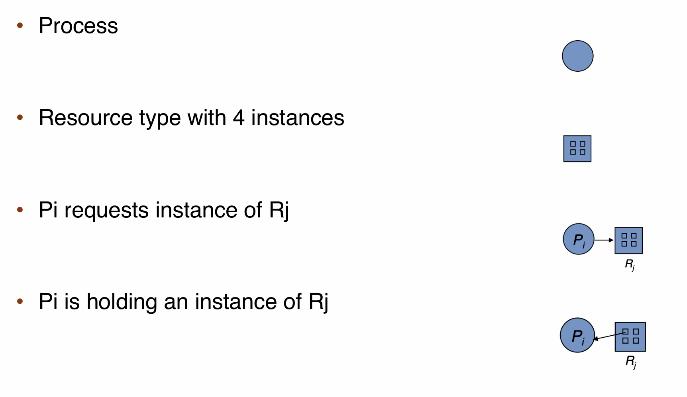

Deadlock¶
定义¶
A set of blocked process each holding a resource and waiting to acquire a resource held by another process in the set.
大多数操作系统并不预防或者处理死锁。很多都采用鸵鸟的解决方式——忽略死锁问题并且假装死锁从来没有在操作系统中发生过。
系统模型与资源分配¶
线程在使用资源前必须请求资源，使用后必须释放资源，线程可以请求执行指定任务所需的尽可能多的资源。正常操作模式下，线程可以仅按照以下顺序使用资源：
- 申请：线程请求资源，如果申请不能立刻被允许，申请线程必须一直等待，直到资源可用。
- 使用：线程对资源进行操作。
- 释放：线程释放资源。
系统资源分配图¶
通过成为系统资源分配图/Resource Allocation Graph 的有向图可以精确描述死锁。系统资源分配图包括节点集合 \(V = P \cup R\) 和边集合 \(E\)，其中 \(P\) 是线程的集合，\(R\) 是资源的集合，\(P\) 和 \(R\) 互斥，\(E\) 是线程和资源之间的边。
从线程 \(P_i\) 到资源 \(R_j\) 的边表示线程 \(P_i\) 请求资源 \(R_j\)，也就是申请边/Request Edge；从资源 \(R_j\) 到线程 \(P_i\) 的边表示资源 \(R_j\) 分配给线程 \(P_i\)，也就是分配边/Assignment Edge。
在资源分配图上，我们使用圆表示线程，使用方块表示资源类型。由于资源类型可能有多个实例，所以以矩形内的点的数量表示实例数量，申请边应从线程指向资源类型，分配边应从资源类型内的实例指向线程。

死锁的条件¶
如果在一个系统中下面四个条件同时成立，那么就能引起死锁：
-
互斥/Mutual Exclusion：如果一个资源必须处于非共享模式，也就是一次只有一个线程可以使用。如果另一个线程申请该资源，那么申请线程必须等到资源被释放。
-
占有并等待/Hold and Wait：一个线程应占有至少一个资源，并等待另一个资源，而该资源被其他线程占有。
-
非抢占/No Preemption：资源不能被抢占，只能被线程完成任务后自愿释放。
-
循环等待/Circular Wait：有一组等待线程 \(P_1, P_2, \dots, P_n\)，其中 \(P_1\) 等待 \(P_2\) 占有的资源，\(P_2\) 等待 \(P_3\) 占有的资源，...，\(P_n\) 等待 \(P_1\) 占有的资源。
放到资源分配图上看：如果资源分配图上没有环，系统就不处于死锁状态；若有环，系统可能会也可能不会处于死锁状态。
- 如果每个资源类型刚好有一个实例，那么有环就等价于死锁；
- 如果环上只涉及一组资源类型，且环上的资源类型每个就只有一个实例，那么有环就等价于死锁；
- 如果环上的资源类型有多个实例，那么有环不一定等价于死锁，某个资源实例可以释放并且分配给环上的其他线程，这就盘活了系统。

这个例子里面是锁上了。

这个没锁上，先 2 和 4 释放，然后 1 和 3 就都可以用了。
死锁的处理¶
预防¶
死锁预防/Deadlock Prevention 方案确保至少有一个死锁的必要条件不成立。
- 互斥：互斥条件必须成立，系统至少有一个资源应是非共享的，而共享资源不要求互斥访问，因此不会参与死锁。
- 占有并等待：保证每一个进程在申请资源的时候不占有别的资源。一个方法是线程在执行前申请所有可能需要的资源，但是这种策略对大多数应用程序是不切实际的。另一种是只允许线程在没有资源的时候才可以申请资源，一个线程可以申请一些资源并且使用他们，但是在申请新的资源之前应该将这些资源全部释放再申请。这两种方法的统一问题都是资源利用率很低，并且可能会引起饥饿。
- 非抢占：如果一个线程申请一个另一个不能立刻分配的资源，那么其持有的所有资源都可以被抢占（也就是隐式释放掉所有资源），被抢占的资源被加到它等待的资源列表上，只有当线程获得其原有资源和所有等待资源的时候，其才可以继续执行。问题还是很大，这通常用于状态可以轻松保存和稍后恢复的资源，比如 CPU 寄存器，但是对于诸如信号量和互斥锁之类的资源不能应用。
- 循环等待：对所有资源类型进行完全排序，要求每个进程按照递增顺序申请资源。若是进程申请了某个资源，那么其应该先释放持有的比该资源更高序的所有资源，在此之后再申请该资源，这样可以保证，永远有一个进程可以申请到底。
解决循环等待的方案本身没有问题，除了程序员的问题和利用率的问题之外，还有一个就是很多场合下并不能完全排序资源。并且开发排序或层级结构本身并不能防止死锁；如果可以动态获取锁，那么加强锁排序并不能保证防止死锁。
避免¶
死锁避免/Deadlock Avoidance 要求操作系统事先得到有关线程申请资源和使用资源的额外信息，有了这些信息，系统可以确定对于每个申请，线程是否应该等待。
首先，我们需要知道什么是安全状态：如果系统可以按照一定的顺序为每个线程分配资源，同时避免死锁，我们就说系统的状态是安全的。若是存在一个线程序列 \(\{P_1, P_2, \dots, P_n\}\) 使得对于每个线程 \(T_i\)，其可以申请的资源小于当前可用资源加上前面的线程 \(T_j\) 所占有的资源，那么就称这个线程序列是安全的。只有存在一个安全序列/Safe Sequence，系统才是安全的。

直接拿课上的例子吧：

就是每次找到可以完成的进程，完成以后释放，逐步扩张。
检测¶
我们允许系统既不采用死锁预防算法和死锁避免算法来防止系统进入死锁的状态，但是我们需要检测死锁并且从死锁状态恢复。这要求系统提供：
- 一个用来检查系统状态从而确定是否出现死锁的算法；
- 一个用来从死锁状态中恢复的算法。
检测死锁的算法和上面的算法没有区别，只是前者用于避免死锁，这个用于检测有没有死锁。
（不同的操作系统可能用这个算法实现不同的功能）
恢复¶
死锁恢复有两种选择：一个是简单地终止一个或多个线程来打破循环等待，另一个是从一个或多个死锁线程中抢占资源。
终止进程有两种选项：
- 终止所有死锁进程：代价很大；
- 一次终止一个进程，知道死循环消除为止：开销也很大，因为每次终止进程之后都需要调用死锁检测算法，并且我们需要考虑终止哪个进程。
首先，终止进程并不简单：终止进程应该维护终止时的状态，并且很有可能计算一些内容，避免重复的副作用。比如如果进程正在更新文件，终止进程就会让文件处于错误的状态；如果进程正在持有互斥锁的同时更新数据，我们就必须将锁的状态恢复到可持有的，但是我们显然难以保证共享数据的完整性。
其次，我们该如何选择终止的进程呢？这个问题基本上是经济问题，需要考虑下面因素：
- 进程的优先级；
- 进程已经计算了多久，并且在完成之前还要花多久；
- 进程使用了多少数量的哪些资源；
- 还需要终止多少进程；
- 这个进程是交互式进程/interactive 还是批处理进程/batch process。
如果通过资源抢占来消除死锁，我们应该不断抢占一些进程的资源来让给别的进程使用，直到死锁循环被打破为止。我们需要考虑下面的问题：
- 选择牺牲进程：需要抢占哪些进程的哪些资源，这个问题和终止进程的问题类似；
- 回滚：我们需要好好安排被抢占资源的进程，显然这个进程不能继续正常执行，我们应该将这个进程回滚/Rollback 回到一个安全状态，以便在该状态重启进程。一般来说，很难界定什么是安全状态，最简单的方法就是完全回滚，也就是终止进程并且重新执行，更有效的方法是回滚进程到足够打破死锁，但是这种方法要求系统维护相关进程足够的状态信息。
- 饥饿：如何确保资源不会总是从同一个进程被抢占？
如果一个系统是基于代价选择牺牲进程，那么同一进程很可能总是被选择成被牺牲的，那么这个进程很可能永远也不会完成任务，所有实际系统都必须处理这种情况，应该确保一个进程只能有限次被选择成牺牲进程，最常用的办法就是在代价因素中加上回滚次数。